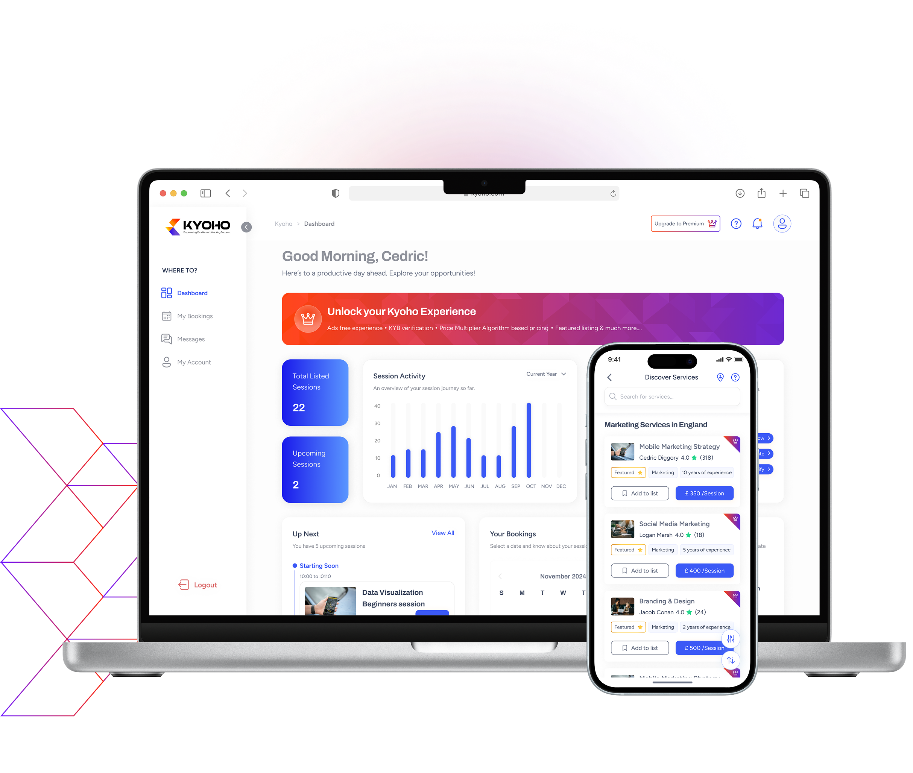
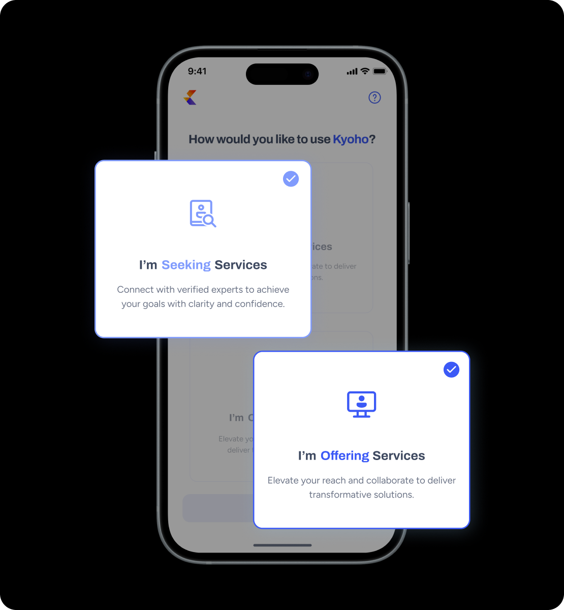
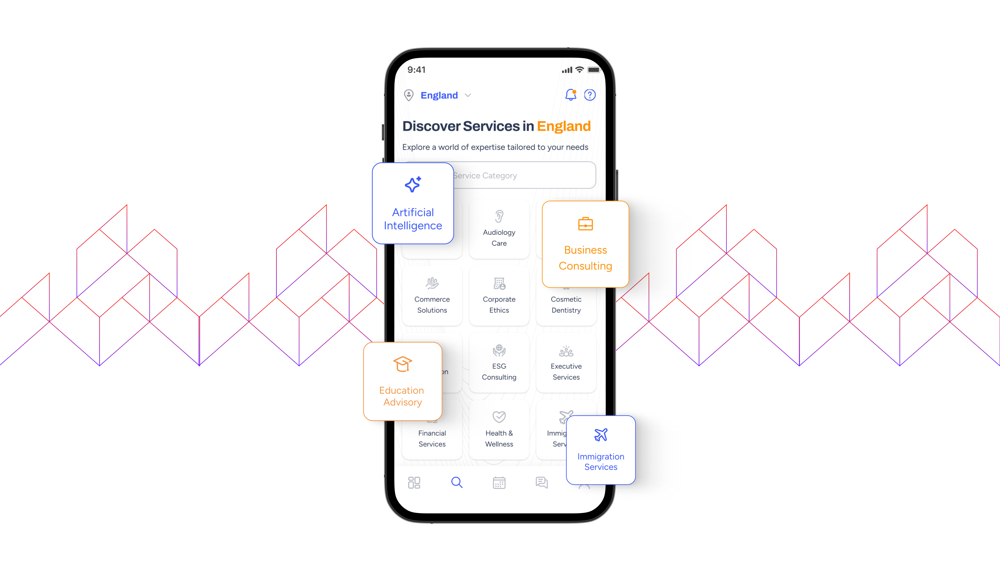
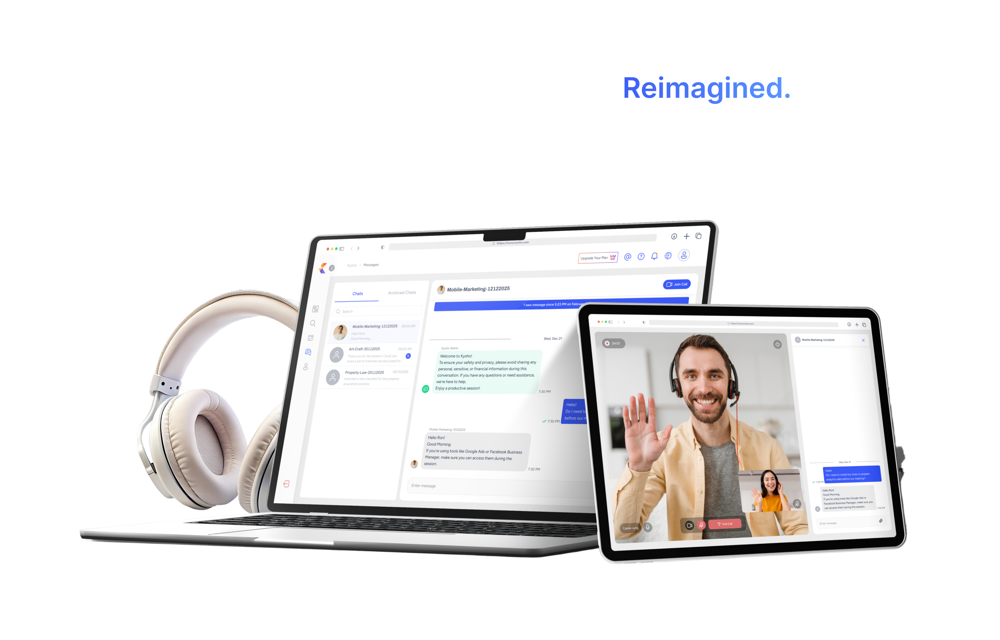
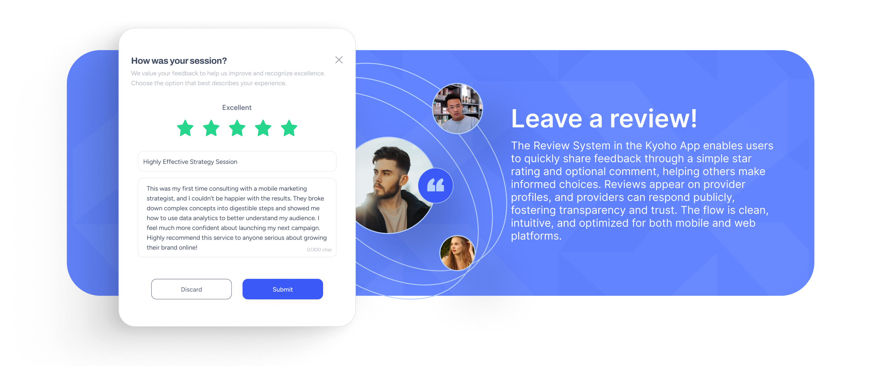

The Challenge
One page. Two audiences. Zero confusion. Kyoho is a two-sided platform it speaks to clients looking for expert guidance and to consultants building their practice. Both land on the same page. Both need to immediately understand what's in it for them. The challenge wasn't just visual. It was structural. How do you welcome two completely different users - one with a problem to solve, one with a skill to sell, without making either feel like they've landed on the wrong page? The landing page had to do the heavy lifting - communicate credibility, reduce friction, and drive two very different CTAs, all at once.

The Approach
Starting with the user's first question. Every landing page visitor arrives with one silent question: "Is this for me?" The design approach was built around answering that question within the first scroll for both users simultaneously.
- Dual-path architecture was the foundation. Rather than forcing a single narrative, the page was structured to gently split into two journeys - client and consultant each with its own flow, its own language, and its own CTA. But both rooted in the same brand voice and visual system.
- Trust-first thinking shaped every section. For a new platform, credibility has to be earned through design. Verification language, transparent step-by-step flows, global reach indicators, and a visible leadership team were all deliberate choices not decoration.
- Progressive disclosure kept the page from feeling overwhelming. Features were revealed in context (the carousel), processes were broken into digestible steps (the 4-step flows), and plans were introduced only after the user had already understood the value.
The goal was a page that felt premium and trustworthy - but never cold.

The Solution
The final design guides both user types through a clear, confident narrative from first impression to action.
- The hero leads with brand positioning "Consulting. Redefined." and two equal CTAs - Find an Expert and Become a consultant so neither user feels secondary.
- A feature carousel mid-page surfaces Kyoho's six core value propositions in a scannable, swipe able format - reducing cognitive load while communicating breadth.
- Two parallel step-by-step flows - one for clients, one for consultants used animated GIF mockups to show the actual product in motion, building confidence and reducing uncertainty before sign-up.
- A global reach map with real country flags signals scale and legitimacy without a single line of marketing copy.

Design Highlights
- Dual CTA Hero: The hero doesn't make users guess. Two CTAs sit side by side. Find an Expert and Become a Consultant with equal visual weight. No hierarchy between them, because neither user is more valuable than the other.
- The Feature Carousel: Six platform features are housed in a continuous auto-scroll carousel with icon + headline + micro-description. It communicates "this platform does a lot" without turning the page into a feature dump.
- Parallel Journey Sections: For Clients and For Consultants flows are designed as mirrors of each other, same structural logic, same step count, same visual rhythm but with entirely different copy and context. Consistency without sameness.
- GIF mockups as In-Context Proof: Each step in the client and consultant journeys uses a GIF of the real product interface. This bridges the gap between what the platform promises and what it actually feels like to use reducing sign-up hesitation before the user even reaches a CTA.
- Trust Signals Layered Throughout: Verification language appears in the hero, the carousel, and the step flows. The leadership team adds human faces to the brand. The global map with real country flags signals scale without a single line of marketing copy. Trust isn't one section; it's woven into every scroll.

The Outcome
The Kyoho landing page successfully communicates a complex, two-sided value proposition in a single, cohesive scroll experience. Both clients and consultants can identify their path within seconds of landing without any explicit "pick your user type" gate or friction. The design system established through this landing page the typography, color language, component style, and content hierarchy, became the visual foundation for the broader platform.
